4-pokojowe mieszkanie z dużym ogrodem – idealne dla rodziny - Targówek
80,55 m² + prywatny ogród 158 m²
Przestronne i funkcjonalne mieszkanie rodzinne, położone na kameralnym, bezpiecznym osiedlu na warszawskim Targówku (Osiedle Wilno). To propozycja dla osób, które chcą połączyć wygodę mieszkania z przestrzenią do życia na świeżym powietrzu.
UKŁAD MIESZKANIA
- salon z aneksem kuchennym – ok. 25 m² (jasna, komfortowa przestrzeń dzienna)
- 3 sypialnie: 14 m², 11 m², 10 m² – idealne dla dzieci, sypialni głównej lub gabinetu
- 2 łazienki: 5 m² i 4 m² – wygodne rozwiązanie dla rodziny
- garderoba
- funkcjonalny przedpokój
Mieszkanie ma przemyślany układ i jest wyposażone i gotowe do zamieszkania.
OGRÓD
Do mieszkania przynależy duży, prywatny ogród o powierzchni aż 158 m², który realnie zwiększa przestrzeń życiową.
- ogród otoczony zielenią i drzewami – zapewnia prywatność
- zagospodarowany taras wykończony deska kompozytowa 50 m2 z zadaszeniem
- miejsce idealne do odpoczynku, zabawy dzieci czy spotkań rodzinnych
- zamontowany system automatycznego podlewania
- robot koszący Gardena w cenie – wygoda użytkowania
- drewniany schowek na rowery oraz dodatkowe pomieszczenie gospodarcze w ogródku.
To rozwiązanie rzadko spotykane w mieszkaniach – daje komfort zbliżony do domu.
OSIEDLE
- kameralna zabudowa
- teren zamknięty z kontrolą dostępu
- plac zabaw dla dzieci
- zadbane części wspólne i tereny zielone
Bezpieczne i przyjazne środowisko dla rodzin.
LOKALIZACJA
- w pobliżu: szkoły, przedszkola, sklepy, punkty usługowe, paczkomaty
- centra handlowe i tereny rekreacyjne w zasięgu kilku minut
- szybki dojazd do centrum Warszawy
- blisko przystanek Zacisze–Wilno – ok. 15 minut do centrum
Połączenie spokojnej, zielonej okolicy z wygodnym dostępem do miasta.
DODATKOWE INFORMACJE
Istnieje możliwość dokupienia 2 wygodnych miejsc garażowych wraz z komórką lokatorską.
Mieszkanie idealne dla rodziny, która szuka przestrzeni, funkcjonalnego układu i prywatnego ogrodu – bez rezygnacji z dobrej lokalizacji.
Więcej informacji 516447798
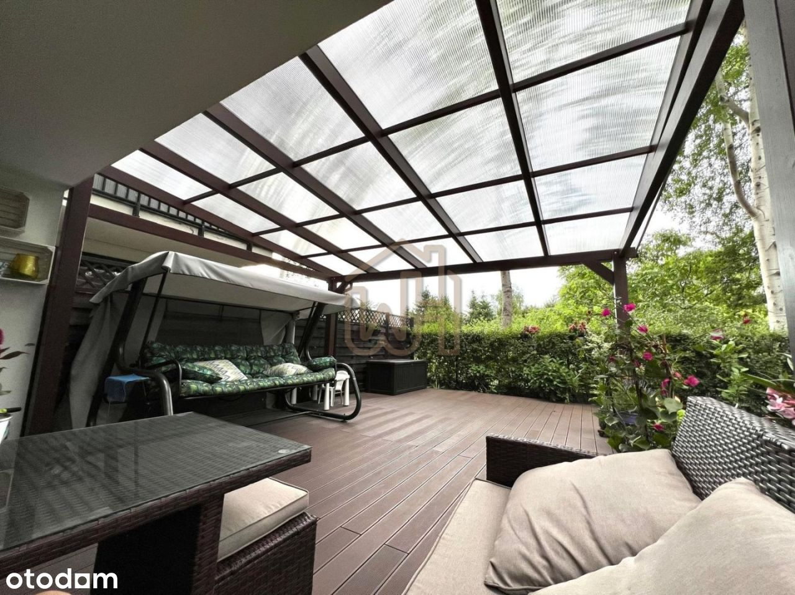
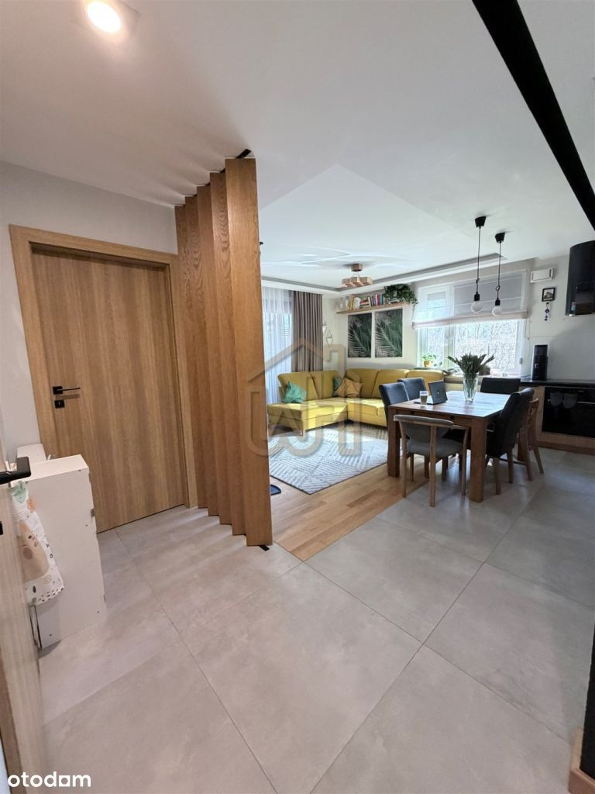
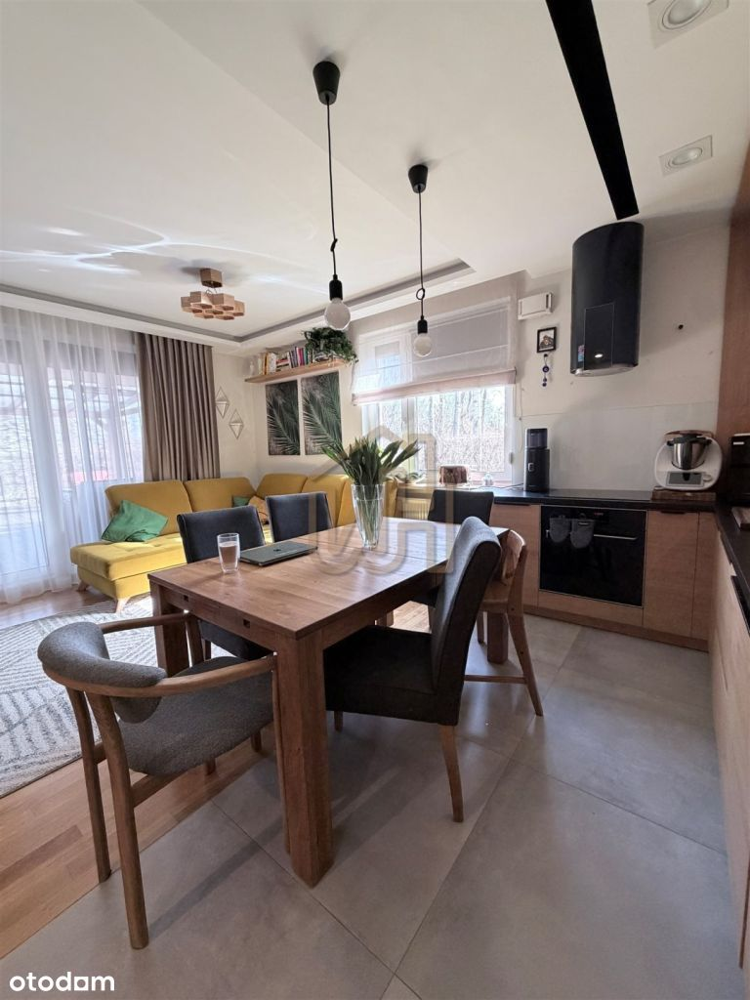
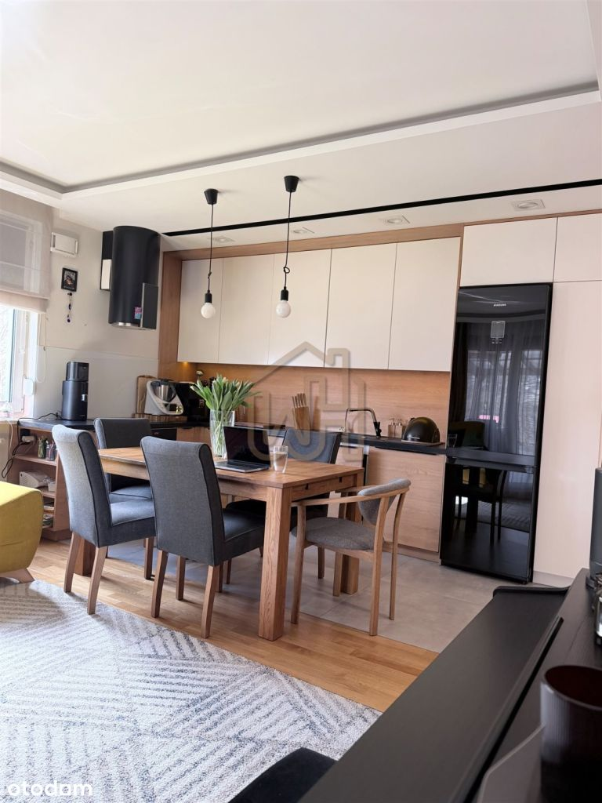
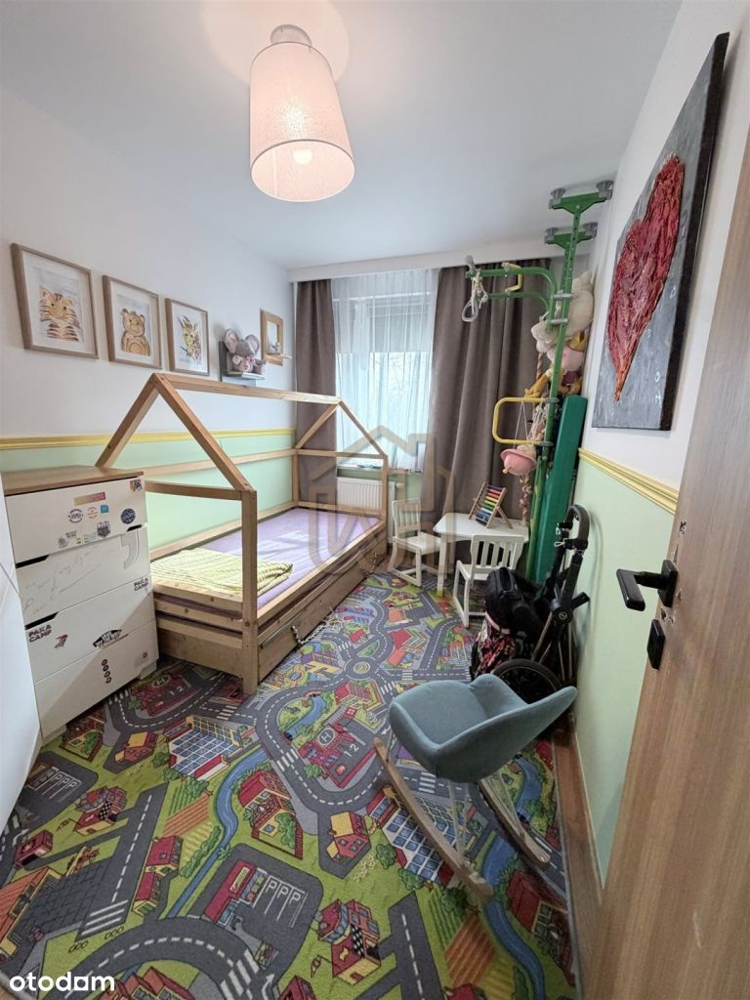
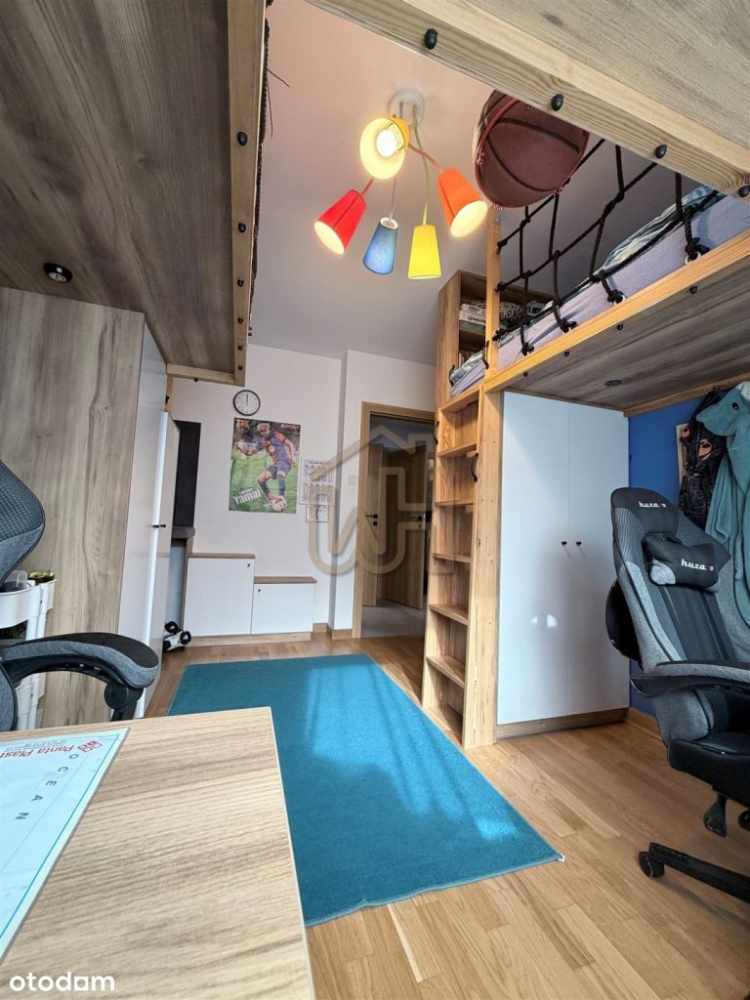
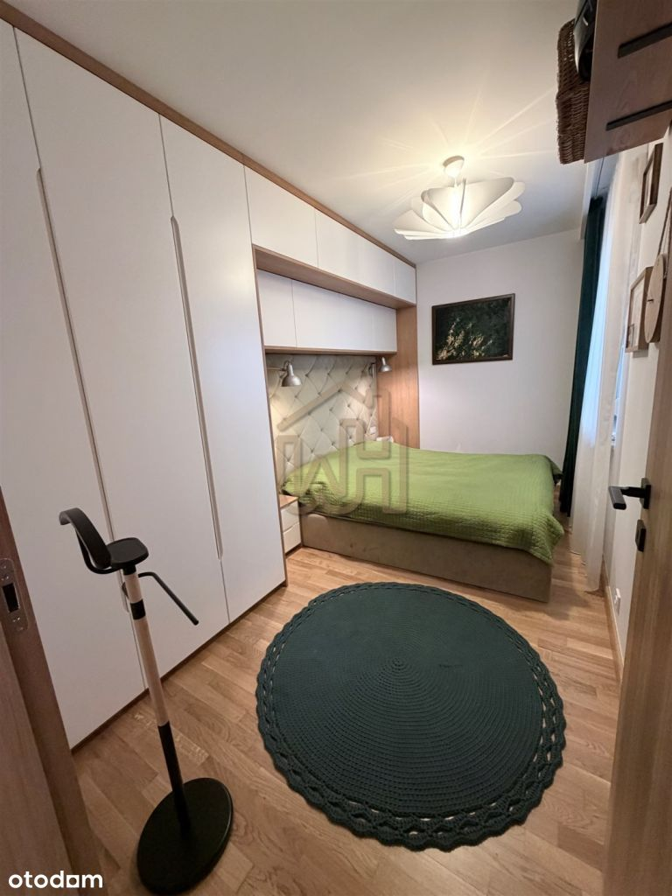
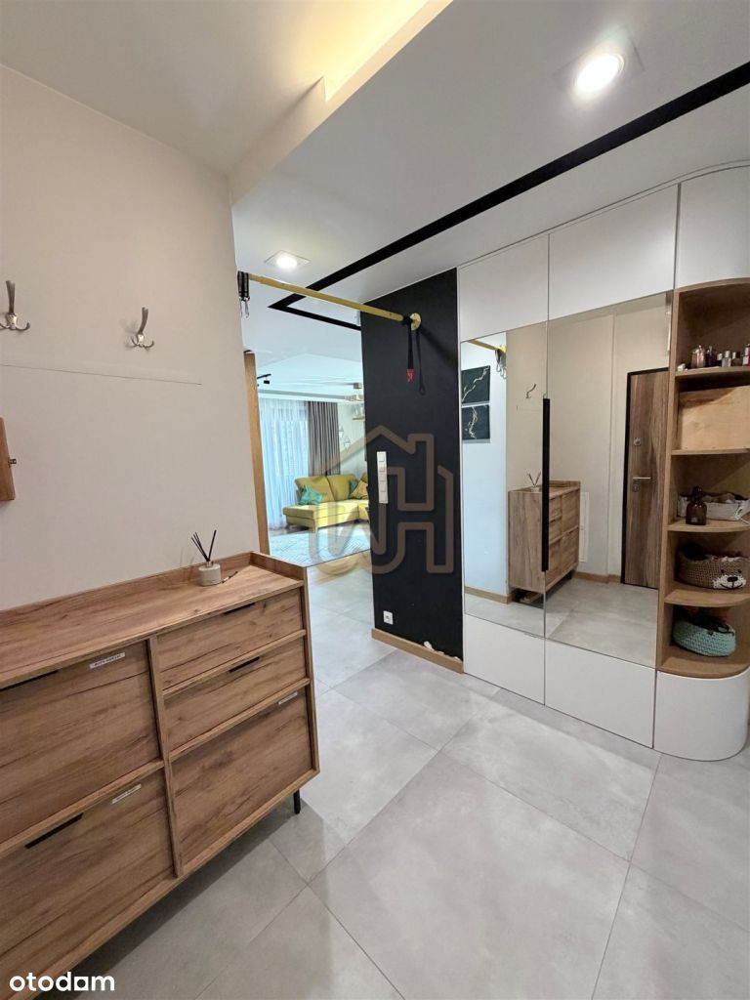
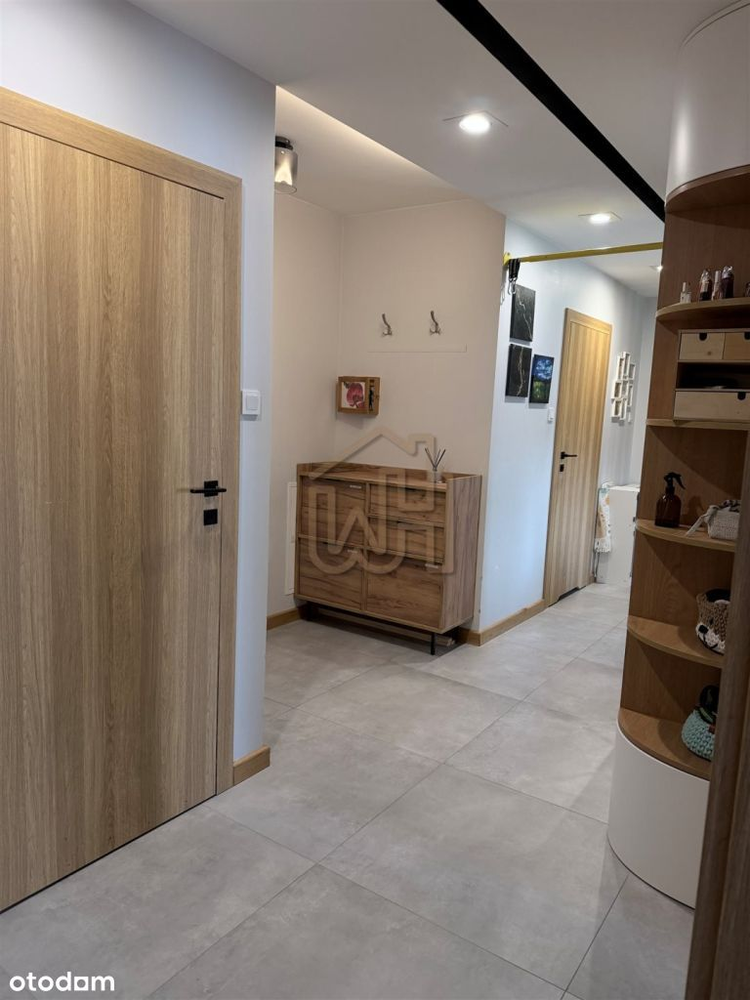
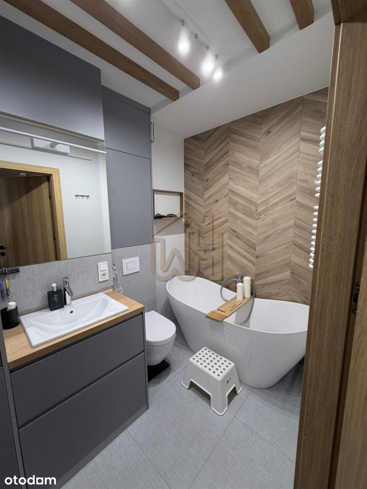
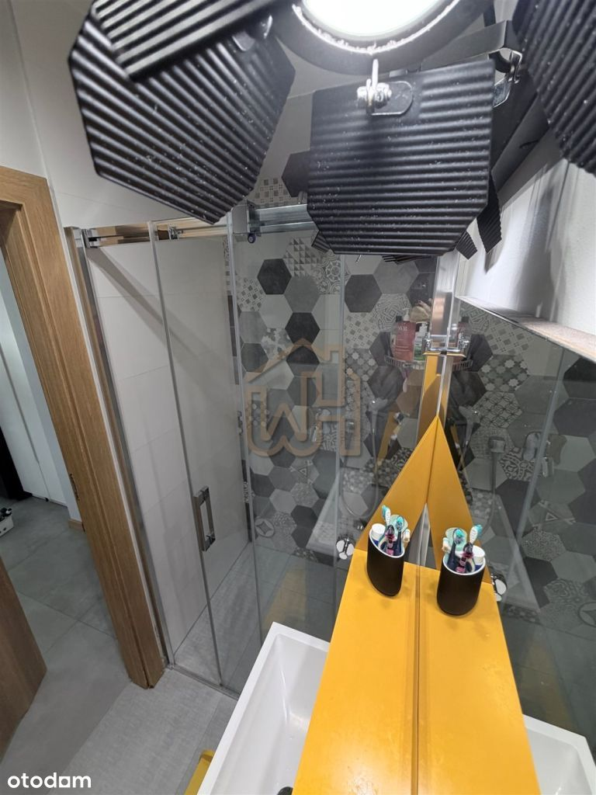